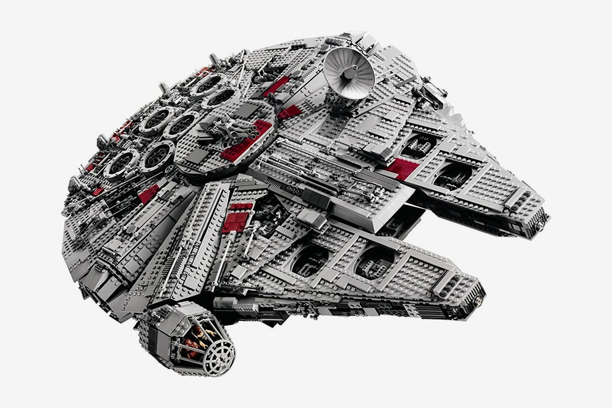
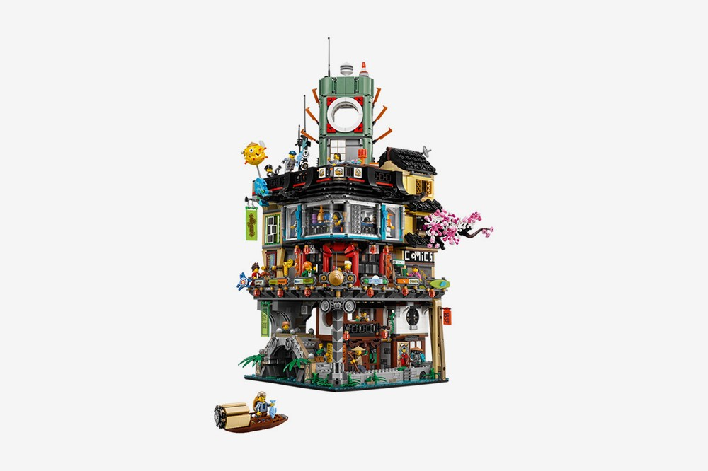
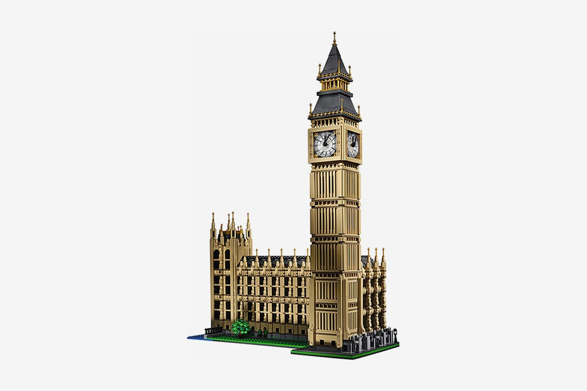
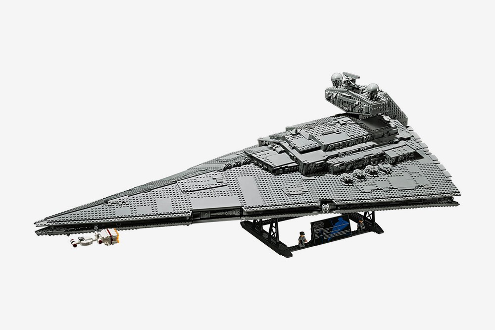
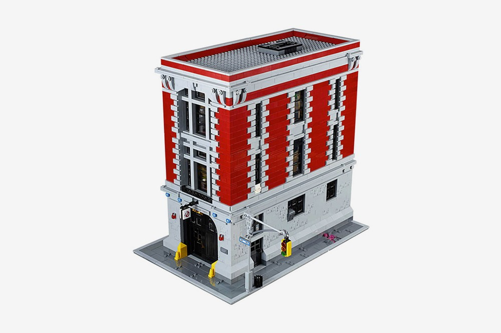

More Than Just A Toy.
Star wars, ninjas, architecture, aliens. Nothing is off limits when it comes to the creativity Lego has been able to inject into children's lives. Their wide breadth of options to play keeps people engaged and interested in what will come next and even after the piece is built, it can always be turned into something else in the future. There are an infinite amount of ways to use the imagination and explore with these blocks!




